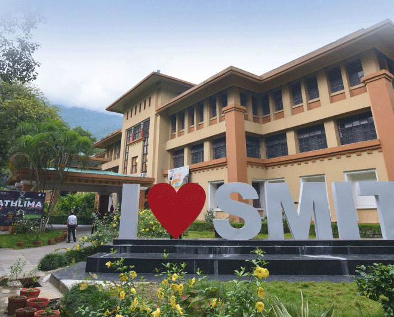

 Saylani Mass IT Training (SMIT) has emerged as one of the most impactful and transformative educational programs in Pakistan, particularly for youth seeking to build a career in the rapidly evolving field of information technology. Launched by the Saylani Welfare International Trust—an NGO renowned for its humanitarian services—SMIT focuses on eliminating financial barriers by offering 100% free professional IT training to deserving individuals who cannot afford expensive private education. With a strong emphasis on practical learning and real-world application, SMIT trains students in high-demand skills such as full-stack web development, mobile app development, artificial intelligence, machine learning, cybersecurity, cloud computing, blockchain, data science, and UI/UX design, among others. The organization regularly updates its curriculum to stay in sync with global technology trends, ensuring that students are learning the latest tools, languages, and platforms used by professionals worldwide. SMIT’s teaching model blends theoretical knowledge with hands-on experience through assignments, group projects, and freelancing training, preparing students not just to find jobs, but to become independent earners, entrepreneurs, and even international service providers through platforms like Upwork and Fiverr. The impact of SMIT goes beyond just technical skills; it instills discipline, professionalism, and confidence in its students. The initiative has thousands of success stories where individuals from humble backgrounds have gone on to earn significant incomes and support their families, all thanks to the education they received at SMIT. By focusing on scalability and accessibility, SMIT has expanded to several cities across Pakistan and has even started attracting interest from overseas communities. It stands today as a symbol of how education, when made free and accessible, can become a powerful tool for social and economic change, reducing poverty and opening doors to global opportunities for Pakistan’s youth. Saylani Mass IT Training (SMIT) has emerged as one of the most impactful and transformative educational programs in Pakistan, particularly for youth seeking to build a career in the rapidly evolving field of information technology. Launched by the Saylani Welfare International Trust—an NGO renowned for its humanitarian services—SMIT focuses on eliminating financial barriers by offering 100% free professional IT training to deserving individuals who cannot afford expensive private education. With a strong emphasis on practical learning and real-world application, SMIT trains students in high-demand skills such as full-stack web development, mobile app development, artificial intelligence, machine learning, cybersecurity, cloud computing, blockchain, data science, and UI/UX design, among others. The organization regularly updates its curriculum to stay in sync with global technology trends, ensuring that students are learning the latest tools, languages, and platforms used by professionals worldwide. SMIT’s teaching model blends theoretical knowledge with hands-on experience through assignments, group projects, and freelancing training, preparing students not just to find jobs, but to become independent earners, entrepreneurs, and even international service providers through platforms like Upwork and Fiverr. The impact of SMIT goes beyond just technical skills; it instills discipline, professionalism, and confidence in its students. The initiative has thousands of success stories where individuals from humble backgrounds have gone on to earn significant incomes and support their families, all thanks to the education they received at SMIT. By focusing on scalability and accessibility, SMIT has expanded to several cities across Pakistan and has even started attracting interest from overseas communities. It stands today as a symbol of how education, when made free and accessible, can become a powerful tool for social and economic change, reducing poverty and opening doors to global opportunities for Pakistan’s youth. Saylani Mass IT Training (SMIT) has emerged as one of the most impactful and transformative educational programs in Pakistan, particularly for youth seeking to build a career in the rapidly evolving field of information technology. Launched by the Saylani Welfare International Trust—an NGO renowned for its humanitarian services—SMIT focuses on eliminating financial barriers by offering 100% free professional IT training to deserving individuals who cannot afford expensive private education. With a strong emphasis on practical learning and real-world application, SMIT trains students in high-demand skills such as full-stack web development, mobile app development, artificial intelligence, machine learning, cybersecurity, cloud computing, blockchain, data science, and UI/UX design, among others. The organization regularly updates its curriculum to stay in sync with global technology trends, ensuring that students are learning the latest tools, languages, and platforms used by professionals worldwide. SMIT’s teaching model blends theoretical knowledge with hands-on experience through assignments, group projects, and freelancing training, preparing students not just to find jobs, but to become independent earners, entrepreneurs, and even international service providers through platforms like Upwork and Fiverr. The impact of SMIT goes beyond just technical skills; it instills discipline, professionalism, and confidence in its students. The initiative has thousands of success stories where individuals from humble backgrounds have gone on to earn significant incomes and support their families, all thanks to the education they received at SMIT. By focusing on scalability and accessibility, SMIT has expanded to several cities across Pakistan and has even started attracting interest from overseas communities. It stands today as a symbol of how education, when made free and accessible, can become a powerful tool for social and economic change, reducing poverty and opening doors to global opportunities for Pakistan’s youth. Saylani Mass IT Training (SMIT) has emerged as one of the most impactful and transformative educational programs in Pakistan, particularly for youth seeking to build a career in the rapidly evolving field of information technology. Launched by the Saylani Welfare International Trust—an NGO renowned for its humanitarian services—SMIT focuses on eliminating financial barriers by offering 100% free professional IT training to deserving individuals who cannot afford expensive private education. With a strong emphasis on practical learning and real-world application, SMIT trains students in high-demand skills such as full-stack web development, mobile app development, artificial intelligence, machine learning, cybersecurity, cloud computing, blockchain, data science, and UI/UX design, among others. The organization regularly updates its curriculum to stay in sync with global technology trends, ensuring that students are learning the latest tools, languages, and platforms used by professionals worldwide. SMIT’s teaching model blends theoretical knowledge with hands-on experience through assignments, group projects, and freelancing training, preparing students not just to find jobs, but to become independent earners, entrepreneurs, and even international service providers through platforms like Upwork and Fiverr. The impact of SMIT goes beyond just technical skills; it instills discipline, professionalism, and confidence in its students. The initiative has thousands of success stories where individuals from humble backgrounds have gone on to earn significant incomes and support their families, all thanks to the education they received at SMIT. By focusing on scalability and accessibility, SMIT has expanded to several cities across Pakistan and has even started attracting interest from overseas communities. It stands today as a symbol of how education, when made free and accessible, can become a powerful tool for social and economic change, reducing poverty and opening doors to global opportunities for Pakistan’s youth. Saylani Mass IT Training (SMIT) has emerged as one of the most impactful and transformative educational programs in Pakistan, particularly for youth seeking to build a career in the rapidly evolving field of information technology. Launched by the Saylani Welfare International Trust—an NGO renowned for its humanitarian services—SMIT focuses on eliminating financial barriers by offering 100% free professional IT training to deserving individuals who cannot afford expensive private education. With a strong emphasis on practical learning and real-world application, SMIT trains students in high-demand skills such as full-stack web development, mobile app development, artificial intelligence, machine learning, cybersecurity, cloud computing, blockchain, data science, and UI/UX design, among others. The organization regularly updates its curriculum to stay in sync with global technology trends, ensuring that students are learning the latest tools, languages, and platforms used by professionals worldwide. SMIT’s teaching model blends theoretical knowledge with hands-on experience through assignments, group projects, and freelancing training, preparing students not just to find jobs, but to become independent earners, entrepreneurs, and even international service providers through platforms like Upwork and Fiverr. The impact of SMIT goes beyond just technical skills; it instills discipline, professionalism, and confidence in its students. The initiative has thousands of success stories where individuals from humble backgrounds have gone on to earn significant incomes and support their families, all thanks to the education they received at SMIT. By focusing on scalability and accessibility, SMIT has expanded to several cities across Pakistan and has even started attracting interest from overseas communities. It stands today as a symbol of how education, when made free and accessible, can become a powerful tool for social and economic change, reducing poverty and opening doors to global opportunities for Pakistan’s youth. Saylani Mass IT Training (SMIT) has emerged as one of the most impactful and transformative educational programs in Pakistan, particularly for youth seeking to build a career in the rapidly evolving field of information technology. Launched by the Saylani Welfare International Trust—an NGO renowned for its humanitarian services—SMIT focuses on eliminating financial barriers by offering 100% free professional IT training to deserving individuals who cannot afford expensive private education. With a strong emphasis on practical learning and real-world application, SMIT trains students in high-demand skills such as full-stack web development, mobile app development, artificial intelligence, machine learning, cybersecurity, cloud computing, blockchain, data science, and UI/UX design, among others. The organization regularly updates its curriculum to stay in sync with global technology trends, ensuring that students are learning the latest tools, languages, and platforms used by professionals worldwide. SMIT’s teaching model blends theoretical knowledge with hands-on experience through assignments, group projects, and freelancing training, preparing students not just to find jobs, but to become independent earners, entrepreneurs, and even international service providers through platforms like Upwork and Fiverr. The impact of SMIT goes beyond just technical skills; it instills discipline, professionalism, and confidence in its students. The initiative has thousands of success stories where individuals from humble backgrounds have gone on to earn significant incomes and support their families, all thanks to the education they received at SMIT. By focusing on scalability and accessibility, SMIT has expanded to several cities across Pakistan and has even started attracting interest from overseas communities. It stands today as a symbol of how education, when made free and accessible, can become a powerful tool for social and economic change, reducing poverty and opening doors to global opportunities for Pakistan’s youth. Saylani Mass IT Training (SMIT) has emerged as one of the most impactful and transformative educational programs in Pakistan, particularly for youth seeking to build a career in the rapidly evolving field of information technology. Launched by the Saylani Welfare International Trust—an NGO renowned for its humanitarian services—SMIT focuses on eliminating financial barriers by offering 100% free professional IT training to deserving individuals who cannot afford expensive private education. With a strong emphasis on practical learning and real-world application, SMIT trains students in high-demand skills such as full-stack web development, mobile app development, artificial intelligence, machine learning, cybersecurity, cloud computing, blockchain, data science, and UI/UX design, among others. The organization regularly updates its curriculum to stay in sync with global technology trends, ensuring that students are learning the latest tools, languages, and platforms used by professionals worldwide. SMIT’s teaching model blends theoretical knowledge with hands-on experience through assignments, group projects, and freelancing training, preparing students not just to find jobs, but to become independent earners, entrepreneurs, and even international service providers through platforms like Upwork and Fiverr. The impact of SMIT goes beyond just technical skills; it instills discipline, professionalism, and confidence in its students. The initiative has thousands of success stories where individuals from humble backgrounds have gone on to earn significant incomes and support their families, all thanks to the education they received at SMIT. By focusing on scalability and accessibility, SMIT has expanded to several cities across Pakistan and has even started attracting interest from overseas communities. It stands today as a symbol of how education, when made free and accessible, can become a powerful tool for social and economic change, reducing poverty and opening doors to global opportunities for Pakistan’s youth. Saylani Mass IT Training (SMIT) has emerged as one of the most impactful and transformative educational programs in Pakistan, particularly for youth seeking to build a career in the rapidly evolving field of information technology. Launched by the Saylani Welfare International Trust—an NGO renowned for its humanitarian services—SMIT focuses on eliminating financial barriers by offering 100% free professional IT training to deserving individuals who cannot afford expensive private education. With a strong emphasis on practical learning and real-world application, SMIT trains students in high-demand skills such as full-stack web development, mobile app development, artificial intelligence, machine learning, cybersecurity, cloud computing, blockchain, data science, and UI/UX design, among others. The organization regularly updates its curriculum to stay in sync with global technology trends, ensuring that students are learning the latest tools, languages, and platforms used by professionals worldwide. SMIT’s teaching model blends theoretical knowledge with hands-on experience through assignments, group projects, and freelancing training, preparing students not just to find jobs, but to become independent earners, entrepreneurs, and even international service providers through platforms like Upwork and Fiverr. The impact of SMIT goes beyond just technical skills; it instills discipline, professionalism, and confidence in its students. The initiative has thousands of success stories where individuals from humble backgrounds have gone on to earn significant incomes and support their families, all thanks to the education they received at SMIT. By focusing on scalability and accessibility, SMIT has expanded to several cities across Pakistan and has even started attracting interest from overseas communities. It stands today as a symbol of how education, when made free and accessible, can become a powerful tool for social and economic change, reducing poverty and opening doors to global opportunities for Pakistan’s youth.
Saylani Mass IT Training (SMIT) has emerged as one of the most impactful and transformative educational programs in Pakistan, particularly for youth seeking to build a career in the rapidly evolving field of information technology. Launched by the Saylani Welfare International Trust—an NGO renowned for its humanitarian services—SMIT focuses on eliminating financial barriers by offering 100% free professional IT training to deserving individuals who cannot afford expensive private education. With a strong emphasis on practical learning and real-world application, SMIT trains students in high-demand skills such as full-stack web development, mobile app development, artificial intelligence, machine learning, cybersecurity, cloud computing, blockchain, data science, and UI/UX design, among others. The organization regularly updates its curriculum to stay in sync with global technology trends, ensuring that students are learning the latest tools, languages, and platforms used by professionals worldwide. SMIT’s teaching model blends theoretical knowledge with hands-on experience through assignments, group projects, and freelancing training, preparing students not just to find jobs, but to become independent earners, entrepreneurs, and even international service providers through platforms like Upwork and Fiverr. The impact of SMIT goes beyond just technical skills; it instills discipline, professionalism, and confidence in its students. The initiative has thousands of success stories where individuals from humble backgrounds have gone on to earn significant incomes and support their families, all thanks to the education they received at SMIT. By focusing on scalability and accessibility, SMIT has expanded to several cities across Pakistan and has even started attracting interest from overseas communities. It stands today as a symbol of how education, when made free and accessible, can become a powerful tool for social and economic change, reducing poverty and opening doors to global opportunities for Pakistan’s youth. Saylani Mass IT Training (SMIT) has emerged as one of the most impactful and transformative educational programs in Pakistan, particularly for youth seeking to build a career in the rapidly evolving field of information technology. Launched by the Saylani Welfare International Trust—an NGO renowned for its humanitarian services—SMIT focuses on eliminating financial barriers by offering 100% free professional IT training to deserving individuals who cannot afford expensive private education. With a strong emphasis on practical learning and real-world application, SMIT trains students in high-demand skills such as full-stack web development, mobile app development, artificial intelligence, machine learning, cybersecurity, cloud computing, blockchain, data science, and UI/UX design, among others. The organization regularly updates its curriculum to stay in sync with global technology trends, ensuring that students are learning the latest tools, languages, and platforms used by professionals worldwide. SMIT’s teaching model blends theoretical knowledge with hands-on experience through assignments, group projects, and freelancing training, preparing students not just to find jobs, but to become independent earners, entrepreneurs, and even international service providers through platforms like Upwork and Fiverr. The impact of SMIT goes beyond just technical skills; it instills discipline, professionalism, and confidence in its students. The initiative has thousands of success stories where individuals from humble backgrounds have gone on to earn significant incomes and support their families, all thanks to the education they received at SMIT. By focusing on scalability and accessibility, SMIT has expanded to several cities across Pakistan and has even started attracting interest from overseas communities. It stands today as a symbol of how education, when made free and accessible, can become a powerful tool for social and economic change, reducing poverty and opening doors to global opportunities for Pakistan’s youth. Saylani Mass IT Training (SMIT) has emerged as one of the most impactful and transformative educational programs in Pakistan, particularly for youth seeking to build a career in the rapidly evolving field of information technology. Launched by the Saylani Welfare International Trust—an NGO renowned for its humanitarian services—SMIT focuses on eliminating financial barriers by offering 100% free professional IT training to deserving individuals who cannot afford expensive private education. With a strong emphasis on practical learning and real-world application, SMIT trains students in high-demand skills such as full-stack web development, mobile app development, artificial intelligence, machine learning, cybersecurity, cloud computing, blockchain, data science, and UI/UX design, among others. The organization regularly updates its curriculum to stay in sync with global technology trends, ensuring that students are learning the latest tools, languages, and platforms used by professionals worldwide. SMIT’s teaching model blends theoretical knowledge with hands-on experience through assignments, group projects, and freelancing training, preparing students not just to find jobs, but to become independent earners, entrepreneurs, and even international service providers through platforms like Upwork and Fiverr. The impact of SMIT goes beyond just technical skills; it instills discipline, professionalism, and confidence in its students. The initiative has thousands of success stories where individuals from humble backgrounds have gone on to earn significant incomes and support their families, all thanks to the education they received at SMIT. By focusing on scalability and accessibility, SMIT has expanded to several cities across Pakistan and has even started attracting interest from overseas communities. It stands today as a symbol of how education, when made free and accessible, can become a powerful tool for social and economic change, reducing poverty and opening doors to global opportunities for Pakistan’s youth. Saylani Mass IT Training (SMIT) has emerged as one of the most impactful and transformative educational programs in Pakistan, particularly for youth seeking to build a career in the rapidly evolving field of information technology. Launched by the Saylani Welfare International Trust—an NGO renowned for its humanitarian services—SMIT focuses on eliminating financial barriers by offering 100% free professional IT training to deserving individuals who cannot afford expensive private education. With a strong emphasis on practical learning and real-world application, SMIT trains students in high-demand skills such as full-stack web development, mobile app development, artificial intelligence, machine learning, cybersecurity, cloud computing, blockchain, data science, and UI/UX design, among others. The organization regularly updates its curriculum to stay in sync with global technology trends, ensuring that students are learning the latest tools, languages, and platforms used by professionals worldwide. SMIT’s teaching model blends theoretical knowledge with hands-on experience through assignments, group projects, and freelancing training, preparing students not just to find jobs, but to become independent earners, entrepreneurs, and even international service providers through platforms like Upwork and Fiverr. The impact of SMIT goes beyond just technical skills; it instills discipline, professionalism, and confidence in its students. The initiative has thousands of success stories where individuals from humble backgrounds have gone on to earn significant incomes and support their families, all thanks to the education they received at SMIT. By focusing on scalability and accessibility, SMIT has expanded to several cities across Pakistan and has even started attracting interest from overseas communities. It stands today as a symbol of how education, when made free and accessible, can become a powerful tool for social and economic change, reducing poverty and opening doors to global opportunities for Pakistan’s youth. Saylani Mass IT Training (SMIT) has emerged as one of the most impactful and transformative educational programs in Pakistan, particularly for youth seeking to build a career in the rapidly evolving field of information technology. Launched by the Saylani Welfare International Trust—an NGO renowned for its humanitarian services—SMIT focuses on eliminating financial barriers by offering 100% free professional IT training to deserving individuals who cannot afford expensive private education. With a strong emphasis on practical learning and real-world application, SMIT trains students in high-demand skills such as full-stack web development, mobile app development, artificial intelligence, machine learning, cybersecurity, cloud computing, blockchain, data science, and UI/UX design, among others. The organization regularly updates its curriculum to stay in sync with global technology trends, ensuring that students are learning the latest tools, languages, and platforms used by professionals worldwide. SMIT’s teaching model blends theoretical knowledge with hands-on experience through assignments, group projects, and freelancing training, preparing students not just to find jobs, but to become independent earners, entrepreneurs, and even international service providers through platforms like Upwork and Fiverr. The impact of SMIT goes beyond just technical skills; it instills discipline, professionalism, and confidence in its students. The initiative has thousands of success stories where individuals from humble backgrounds have gone on to earn significant incomes and support their families, all thanks to the education they received at SMIT. By focusing on scalability and accessibility, SMIT has expanded to several cities across Pakistan and has even started attracting interest from overseas communities. It stands today as a symbol of how education, when made free and accessible, can become a powerful tool for social and economic change, reducing poverty and opening doors to global opportunities for Pakistan’s youth. Saylani Mass IT Training (SMIT) has emerged as one of the most impactful and transformative educational programs in Pakistan, particularly for youth seeking to build a career in the rapidly evolving field of information technology. Launched by the Saylani Welfare International Trust—an NGO renowned for its humanitarian services—SMIT focuses on eliminating financial barriers by offering 100% free professional IT training to deserving individuals who cannot afford expensive private education. With a strong emphasis on practical learning and real-world application, SMIT trains students in high-demand skills such as full-stack web development, mobile app development, artificial intelligence, machine learning, cybersecurity, cloud computing, blockchain, data science, and UI/UX design, among others. The organization regularly updates its curriculum to stay in sync with global technology trends, ensuring that students are learning the latest tools, languages, and platforms used by professionals worldwide. SMIT’s teaching model blends theoretical knowledge with hands-on experience through assignments, group projects, and freelancing training, preparing students not just to find jobs, but to become independent earners, entrepreneurs, and even international service providers through platforms like Upwork and Fiverr. The impact of SMIT goes beyond just technical skills; it instills discipline, professionalism, and confidence in its students. The initiative has thousands of success stories where individuals from humble backgrounds have gone on to earn significant incomes and support their families, all thanks to the education they received at SMIT. By focusing on scalability and accessibility, SMIT has expanded to several cities across Pakistan and has even started attracting interest from overseas communities. It stands today as a symbol of how education, when made free and accessible, can become a powerful tool for social and economic change, reducing poverty and opening doors to global opportunities for Pakistan’s youth. Saylani Mass IT Training (SMIT) has emerged as one of the most impactful and transformative educational programs in Pakistan, particularly for youth seeking to build a career in the rapidly evolving field of information technology. Launched by the Saylani Welfare International Trust—an NGO renowned for its humanitarian services—SMIT focuses on eliminating financial barriers by offering 100% free professional IT training to deserving individuals who cannot afford expensive private education. With a strong emphasis on practical learning and real-world application, SMIT trains students in high-demand skills such as full-stack web development, mobile app development, artificial intelligence, machine learning, cybersecurity, cloud computing, blockchain, data science, and UI/UX design, among others. The organization regularly updates its curriculum to stay in sync with global technology trends, ensuring that students are learning the latest tools, languages, and platforms used by professionals worldwide. SMIT’s teaching model blends theoretical knowledge with hands-on experience through assignments, group projects, and freelancing training, preparing students not just to find jobs, but to become independent earners, entrepreneurs, and even international service providers through platforms like Upwork and Fiverr. The impact of SMIT goes beyond just technical skills; it instills discipline, professionalism, and confidence in its students. The initiative has thousands of success stories where individuals from humble backgrounds have gone on to earn significant incomes and support their families, all thanks to the education they received at SMIT. By focusing on scalability and accessibility, SMIT has expanded to several cities across Pakistan and has even started attracting interest from overseas communities. It stands today as a symbol of how education, when made free and accessible, can become a powerful tool for social and economic change, reducing poverty and opening doors to global opportunities for Pakistan’s youth.